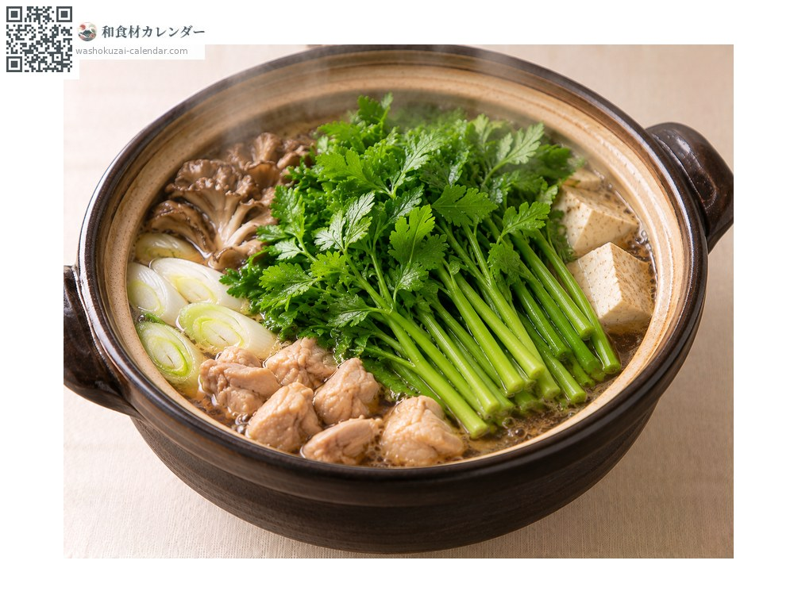
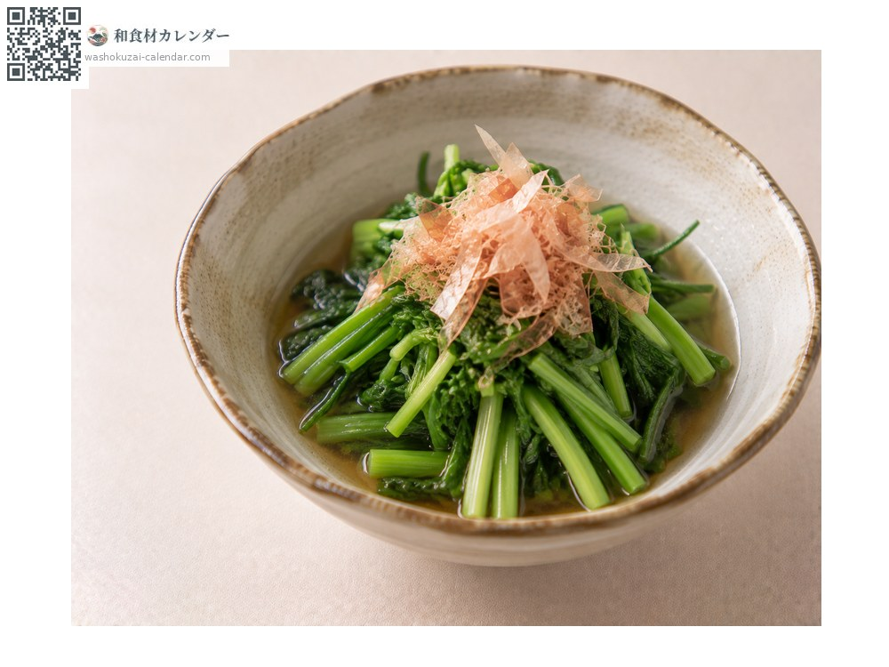
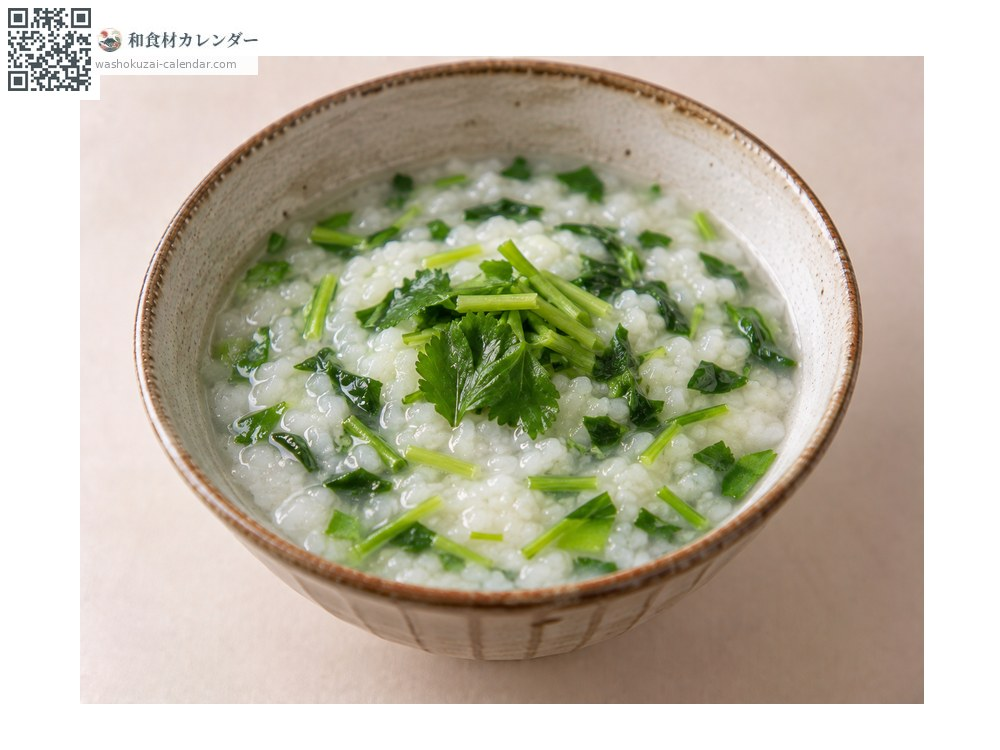
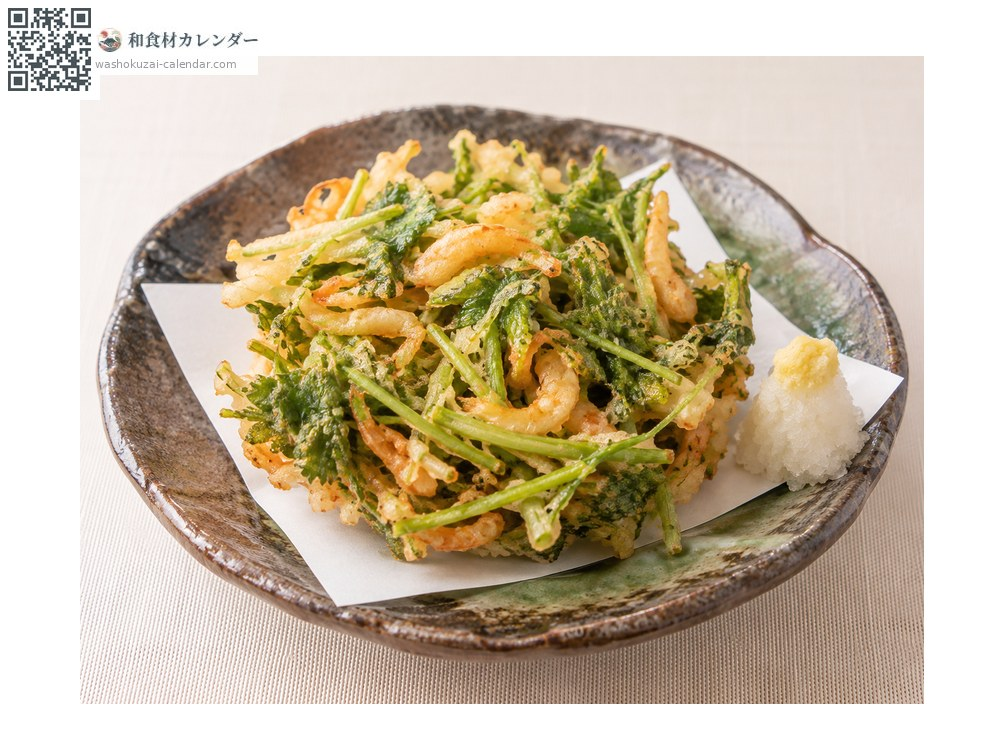

蔬菜
水芹
セリ せり seri
别名seri
应季时期为1月、2月、3月

应季时期
1月
2月
3月
4月
5月
6月
7月
8月
9月
10月
11月
12月
应季有供应
烹饪方法

水芹火锅
连根一起吃，是宫城的乡土料理。

烫青菜浸高汤
快速焯水。

七草粥
春之七草之一。

什锦炸饼
香气会更明显。
挑选方法
叶片深绿、香气强。带根的要根部白而结实。
保存方法
用沾湿的报纸包好冷藏。香气容易散失，要尽早使用。
主要产地
小知识
在宫城会连根一起放进せり锅。人们特别喜爱根部的香气与口感。